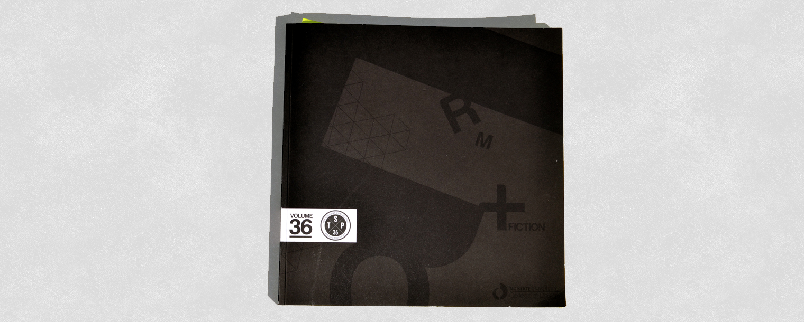
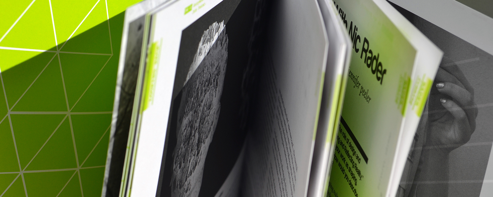
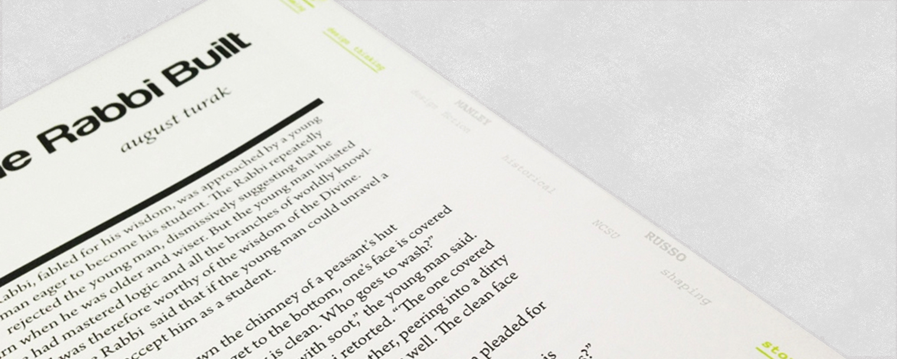
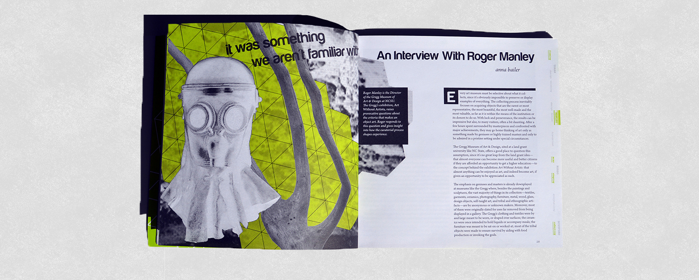
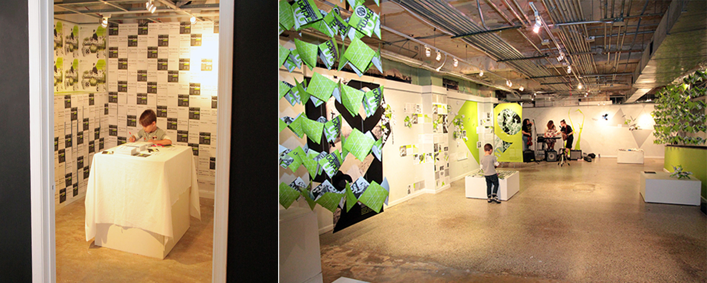
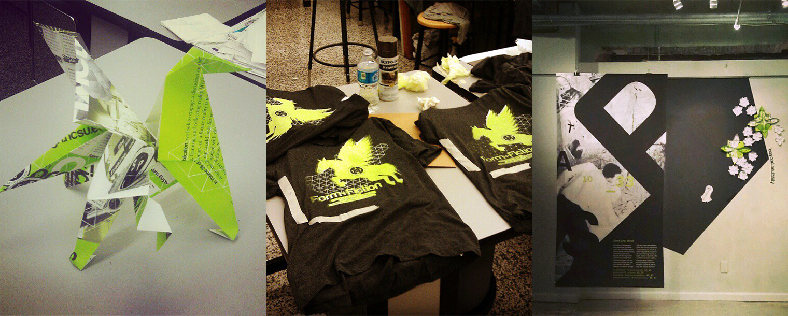

The Student Publication Volume 36:
Form + Fiction

Background/Overview:
Volume 36 of The Student Publication engages a discussion on the role of design and designers in shaping, framing, and reflecting reality. While the notion of the designer as a constructor or visionary of a future reality is not a new one, the increasing complexity and connectivity of our world begs for renewed vigor in its evaluation. As more people and entities are engaged with design, the traditional role of the designer as a creator of a single reality is shifting. Yet one area that distinguishes the designer is our capacity and propensity to envision new futures through fiction. The dialogue between these two ideas is at the core of Vol 36 of The Student Publication: Form + Fiction.
The Student Publication is published by design students at the College of Design at North Carolina State University. It is for design students, practitioners, and academics alike. Its aim is to critically evaluate emerging themes and topics in design education and practice that influence that way that we learn, think and talk about design process, practice and theory. We look to emerging and historical voices in the field of design (Industrial, Architecture, Landscape, Graphic and Art+ Design) to address these themes and contribute to a growing legacy of design dialogue. Previous Publications have addresses themes such as collaboration and co-creation, relevance, new futurism, and emergent ideas in architecture. The theme of Volume 36, Form + Fiction, seeks to look critically and deeply at the role of design and the designer in defining, framing and shaping reality.
  Launch Party
In order to promote the publication, the design team took over a local galleryspace and tranformed it into an interactive launch party. Over 200 people attended and many copies of the publication were sold.
 My Contributions
My role was as a member of the design team. I was responsible for:
- Collaborating with a small team to pick and develop a visual direction for this issue based on the theme
- Curating the content to create a compelling journey throughout the publication
- Producing varrious spreads, focusing on typographic detail
- Planning and execution for the transformation of our galleryspace into an interactive launch party
Contributors
Team members: Jillian Quiller, Grace Pledger
Designed under instruction of Tania Allen at NC State College of Design